Home
- Commands
- Commands
- Add/Change/Save Credit Card — ACC/CCC/SCC
- Administration Tools
- Adjustment / Remove Adjustment — ADJ/RAJ
- Clean Up Data — CLN
- Deactivate Old Customers — DOC
- Email Suppression Report — ESR
- Find Duplicate Customers — FDC
- Manage Failed Messages — MM
- Pick Up Route — PUR
- Remove Coupon on Account Credit — RCAC
- Remove Empty Invoices — REI
- SMS Suppression Report — SSR
- Tag Issues — TGI
- View Tag Status/View Invoice Status — VTS/VIS
- Write Off Bulk — WOB
- Batch Command — B
- Cash In/Out — CAI/CAO
- Customer Updates — CU
- Deactivate Old Customers — DOC
- Edit Credit Card — ECC
- Export Sales
- Find Duplicates — FDC
- Heat Seal Commands
- Monthly Charge Accounts — MCA
- Multiple Locations — ML
- Multiple Pickup — MU
- Price Check — PC/PCC
- Print Sub Invoice — PSI
- Process Card Errors — PCE
- Process Charge Accounts — PCA
- Put Overage on Account — POA
- Re-Scan Inventory — RSI
- Remove Batch Payments — RBP
- Remove Credit Card — RCC
- Send Pickup Emails — SPE
- Set Pick Up Location — PUL
- Terminal Commands — TS/TR/TV
- Functions
- Setup
- All Employees
- Manager
- Brands
- Cash Drawer
- Change Routes
- Charge Account Frequencies
- Company
- Coupons
- Coupon Codes
- Credit Card
- Customer Codes
- Email/Messaging
- Invoice Locks
- Invoices
- Price List Comparator
- Price Lists
- Ready By Defaults
- Receipt Coupon
- Statement Groups Lists
- Statement Groups
- Store Locations
- System
- Tags
- Taxes
- Text Prompts
- Time Card
- SuperUser
Commands ↵
Commands
Commands listed in the Command Line drop down
- Commands
- Add/Change/Save Credit Card — ACC/CCC/SCC
- Administration Tools
- Adjustment / Remove Adjustment — ADJ/RAJ
- Clean Up Data — CLN
- Deactivate Old Customers — DOC
- Email Suppression Report — ESR
- Find Duplicate Customers — FDC
- Manage Failed Messages — MM
- Pick Up Route — PUR
- Remove Coupon on Account Credit — RCAC
- Remove Empty Invoices — REI
- SMS Suppression Report — SSR
- Tag Issues — TGI
- View Tag Status/View Invoice Status — VTS/VIS
- Write Off Bulk — WOB
- Batch Command — B
- Cash In/Out — CAI/CAO
- Customer Updates — CU
- Deactivate Old Customers — DOC
- Edit Credit Card — ECC
- Export Sales
- Find Duplicates — FDC
- Heat Seal Commands
- Monthly Charge Accounts — MCA
- Multiple Locations — ML
- Multiple Pickup — MU
- Price Check — PC/PCC
- Print Sub Invoice — PSI
- Process Card Errors — PCE
- Process Charge Accounts — PCA
- Put Overage on Account — POA
- Re-Scan Inventory — RSI
- Remove Batch Payments — RBP
- Remove Credit Card — RCC
- Send Pickup Emails — SPE
- Set Pick Up Location — PUL
- Terminal Commands — TS/TR/TV
Add/Change/Save Credit Card — ACC/CCC/SCC
Adds or edits the current customer's card on file. If the customer has no currently active card it will add the card. If they do have a card it will load the data for that card to allow editing.
Administration Tools ↵
Administration Tools
Tools intended for use by administrators that should not be accessible by general front counter staff.
- Adjustment / Remove Adjustment — ADJ/RAJ
- Clean Up Data — CLN
- Deactivate Old Customers — DOC
- Email Suppression Report — ESR
- Find Duplicate Customers — FDC
- Manage Failed Messages — MM
- Pick Up Route — PUR
- Remove Coupon on Account Credit — RCAC
- Remove Empty Invoices — REI
- SMS Suppression Report — SSR
- Tag Issues — TGI
- View Tag Status/View Invoice Status — VTS/VIS
- Write Off Bulk — WOB
Adjustment / Remove Adjustment — ADJ/RAJ
Updated 2024-04-30 version 1.0.45 (0.3.1018)
Allows adjustments to be made to the total of an invoice without throwing the payment reports out of line.
Adjustment
Adds an adjustment line item to the invoice before taxes are calculated.
A reason must be entered to add an adjustment. The other option will allow a custom reason to be typed in.

A popup requesting the adjustment amount will be shown.
❗ In order to reduce the invoice total a negative amount must be entered.

The adjustment item will have the reason written in the invoice line and the amount stored as a coupon amount so that it shows up on the Discounts report.
Making Adjustments is blocked on paid invoices
Remove Adjustment
The Remove Adjustment (RAJ) command will remove all adjustments on the current invoice. This function is also blocked on paid invoices
Clean Up Data — CLN
A tool to clean up data in the database. Generally for fixing misspellings and alternate spellings (e.g. city and brand names)
The two options currently available are Customer City and Brand
Once the Find Matches button is pressed it will search for close matches

In this example there are three different spellings of Chestermere.
Clicking Correct Selected will bring up the option to select the correct spelling.
Here it is clear that for some reason an employee attempted to add the province abbreviation in the City field. As such the correct option would be Calgary without any province abbreviation but that is not available. This is what the Override option is for.
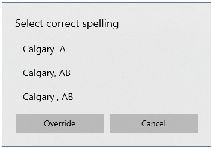
The Override option opens a prompt for the correct spelling to be entered manually
Deactivate Old Customers — DOC
Deactivate customers who's last in date is before a selected cutoff date
Customers cannot be deactivated if they have open (unpaid, unpicked up, and not removed) invoices
If yes is selected here a dialog for saving the deactivated customers to a CSV file will be opened
If there are customers with open invoices then the a dialog for saving those will be opened as well
Email Suppression Report — ESR
Pulls down a comparison of the Email Suppression list from the Amazon Web Services API with existing emails in active customers.
The API Settings are found in Setup>API Keys which requires SuperUser authorization
Once the report is loaded it will display all customers who's email has bee suppressed
Edit Email
If the email is a typo then it can be edited from within the window
The new email must be different from the original one
Export Raw Suppressions
The raw suppression list can be exported to a CSV file
Save Suppression Flags
Save the suppression to the customer's data allowing it to be seen by employees for correction when interacting with the customer
In the customer summary

In the customer's edit page
Clicking on the email in the summary or the suppressed flag in the edit window will show a short explanation of the suppression
Find Duplicate Customers — FDC
Used to find duplicate customers based on name similarity to attempt to join customers with potential misspellings
Similarity Threshold
This function relies on using a fuzzy comparison routine that produces a similarity rating between 0 and 100 for how similar two names are. The threshold is the level above which the customers will be considered to have similar names. If the number is lowered there will be more false matches but bigger spelling mistakes are likely to be found.
In order to search for matches the Find Duplicates button must be pressed as the process can take quite a while.
Once the search has completed the list of matches will be displayed grouped by the first match with the number of matches shown. Clicking on the + button will open the list of matches.
In hte list of matches the individual customers will be listed with check boxes to allow the customers to be selected for joining
Once the customers to join have been selected the Join Selected Customers button can be pressed to start joining.
Manage Failed Messages — MM
Pulls a list of messages that failed to send based on if there is an error in the record.
If there are failed messages they can be expanded using the + button.

Here there is the parameters of the message in JSON format (the block of text surrounded by curly braces {}) followed by the error message No Domain indicating that in this case the domain of the email was missing (the part of the email after the @ symbol)
Edit
The message's customer's contact info and contact preferences can be edited here.
Delete
Deletes the message so that it is cleared from the queue.
Refresh
Updates the list in case more errors have occurred while the window has been open.
Retry Message
Retries sending the message.
Pick Up Route — PUR
Usually items on a route would be marked picked up after they are unloaded from the Metal Progetti machine using the MU command but if there is an issue with the machine the entire route may miss the marking. In this case this command is used to mark all items on a route as picked up within a date range.
After selecting the route and date range the Load button will load a list of un picked up items on the route.
These items can be selected and marked picked up. When a single item is selected the Go To Invoice button can be used to jump the to the invoice in question for a more detailed analysis.
Remove Coupon on Account Credit — RCAC
Updated 2024-05-21 version 1.0.48 (0.3.1018)
Removes credit that was put on a customer's account using coupon

- Remove Credit
- Cancels the credit amount
- Add to Cash Account
- Adds the credit amount to the normal credit account using an Adjustment payment
Remove Empty Invoices — REI
❗ A date range including the current day is not recommended as this can include invoices currently being worked on.
It is possible for errors to result in empty invoices being left in the database. While the system is built to not allow this to occur in normal operation things like the program closing unexpectedly can leave this sort of thing regardless. This command is designed to attempt to clean up these remnants.

Once the date range is selected the Load button will load all the empty invoices in that range.
These can then be selected for removal or individually selected to use the Go To button to inspect in the main window.
SMS Suppression Report — SSR
Loads a list of customers with cellphones matching items on the Opt Out list in the AWS.
The loading procedure cannot show the total amount of items on the list due to how the Opt Out list works on AWS so it simply shows how many items have been pulled so far.
Once the items have loaded they are displayed in a list.
An item can be selected and the cellphone number edited from this screen.
It will not allow the new cellphone to match the current one.
Export Raw Suppressions
Prompts the user to save the Opt Out list to a CSV file.
Save Suppression Flags
Saves a flag to the customer indicating that the customer's cellphone number is suppressed.
Reload
Reloads the list to account for changes to the database.
Go To Customer
Jumps to the customer in question so that more information can be inspected/edited
Tag Issues — TGI
Updated 2024-04-10 version 1.0.44.0 (0.3.1001)
Displays all tags that aren't marked unloaded by Metal Progetti but are on picked up invoices to be investigated/invalidated.

View Tag Status/View Invoice Status — VTS/VIS
View Tag Status (VTS) pulls the main window without any pre-set search while View Invoice Status (VIS) pre-sets an invoice search for the currently loaded invoice
Search types
It is possible to search by Tag, Invoice number, or Customer using the top three buttons (F2, F3, F4). The VIS version of the command skips this and jumps directly to searching by invoice using the currently displayed invoice.
Search
Once the search is initiated it will pull up all the tags that match the criteria up to the selected limit.
View Search Log
View Search Log displays a list of history on the current search in a different screen.
Load Tag History
Load Tag History will load the history of the selected tag from the database. The command timeout is disabled for this request as the search can take a significant amount of time (upwards of 10 minutes) as such this procedure comes with a time elapsed indicator and a cancel button in case the search needs to be aborted to allow for other work to be done.
Once the search is complete the history will displayed in the bottom half of the screen.
This table is large enough to require a horizontal scrollbar to display the rest of the data.
Invalidate Tag
Invalidates the tag on the database to allow Heat Seal Tags to be reused.
Search For Status
Limits the history search to a specific status to search for. The most common one is likely to be the "Confirmation of bagging" which indicates the exact time that the bagger confirmed the garment was loaded.
Write Off Bulk — WOB
Allows all un-picked up invoices with an item with only Missing linked in Re-Scan Inventory reports to be marked written off at once.
If the item has a missing status on one report and a found in different store on a different report is will not be counted as missing as it was missing from one store but found in a different one. As such if there is an incomplete report it may select items that are not actually missing.
When the command first opens it will open a parameters window to select the date range, stores, and routes to search in.
The list of invoices with missing items will be displayed and can be used to select which invoices need to be written off.
Ended: Administration Tools
Batch Command — B
Allows for the payment of multiple invoices from the same Customer/Statement Group at once
To pay invoices for a Statement Group you need to be on the Statement Group's head customer and running the B command will load the group's invoices
Selection
Payment Selection
The check boxes in the Pay column select invoices for payment

Pickup Selection
The check boxes in the PU column select invoices for pickup
Payment
Cash In/Out — CAI/CAO
Updated 2024-04-29 version 1.0.45 (0.3.1015
Allows for the recording of the state of the cash drawer at cash in and out.

When cashing in the drawer total will be calculated automatically.

When cashing out the invoices since the last cash in will be shown and the difference will be calculated. Important to note is that the invoices will be from the last cash in if there is no intervening cash out so if there is a missing cash in and out then it can include multiple days.

Loading old reports requires manager authorization and allows the correction of an older report

Insert Record allows records to be inserted for specific days. If attempting to insert a record for a date that already has one it will prompt to edit the record instead
Deleting records will prompt to ensure that the deletion is intended and requires manager permissions
Customer Updates — CU
This command allows the creation/update of customers based on input from the sign up website. It can also be accessed from the summary line under the command line.
The first column contains the list of sign up/update requests
When a request is selected matching customers will be shown on the side including "(New Customer)" which will create a new customer instead of updating an existing one
Selecting a customer will display the update changes that will occur
Fuzzy Search
The Fuzzy Search function searches for existing customers that vary due to spelling mistakes or typos. Select the part of the name to search on and it will compare with existing customers based on a similarity rating

Delete
Allows update requests to be deleted in case of accidental insertion or bad requests
Update/Add
Updates or adds the selected customer
Deactivate Old Customers — DOC
Deactivates customers who haven't been in since a specific cutoff date
On deactivation a popup will display the number of customers deactivated and the number who were skipped due to open invoices (invoices that haven't been marked paid and picked up or removed). It will ask if you want a CSV file of deactivated customers and if you accept it will open a dialog to ask where to save the file. If there are customers that couldn't be closed it will save a CSV file for those customers
Edit Credit Card — ECC
❗ Not implemented
Intended as a quick method of changing the expiry date without touching anything else. Using the main edit commands Add/Change/Save Credit Card was deemed sufficient.
Export Sales — EXP
Updated 2024-05-02 version 1.0.45 (0.3.1022)
Exports a list of sales for a selected date range.
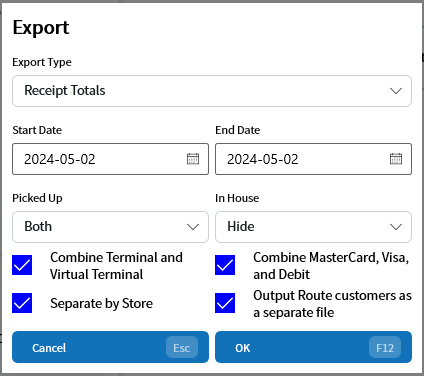
| Parameter | Explanation |
|---|---|
| Export Type | The type of export to use |
| Start Date | The start of the date range (inclusive) |
| End Date | The end of the date range (inclusive) |
| Picked Up | Show all sales, only not picked up, only picked up (Both, Hide, Only) |
| In House | Show all sales, only not in house customers, only in house customers (Both, Hide, Only) |
| Combine Terminal and Virtual Terminal | Combines Terminal and Virtual Terminal transactions into a single payment type |
| Combine MasterCard, Visa, and Debit | Combines the three payment types into a single file leaving American Express separate |
| Separate by Store | Separates each store into its own file |
| Output Route customers as a separate file | Combines all route customers into a separate file treated like it's own store |
There are two types of exports: Receipt Totals and Receipt Sales
Receipt Totals
Produces a single file containing the daily totals based on the payment type and store/route
Receipt Sales
Breaks up the sales detail into multiple files based on the payment type and store/route
❗ If Separate by Store is turned off and Output Route customers as a separate file is turned on it will result in all non-route customers being listed as Counter
As this can be a long running query the option to cancel out is given.

If there were no sales during the time period an error message will be displayed and no files written.
Find Duplicates — FDC
Finds duplicate customer records and opens the ability to join them to similarly named customers. This uses a fuzzy compare function that generates a similarity rating and compares it to a threshold. This is to allow customers with spelling errors and typos to be compared.
The find function requires a button press so that the threshold and years since last in can be set before undertaking the rather lengthy comparison process
Once duplicates are found they will be listed with the number of different customer records found
Clicking the + button will open a list of the records found allowing them to be selected for joining
There are several conditions that make joining impossible without further work and a popup will be displayed if this is found
Heat Seal Commands ↵
Heat Seal Commands
Commands for creating and editing Heat Seal Tags
Add Heat Seal Tag — AHT
Adds a heat seal tag to the current customer. This allows the tag number, brand, item, color, upcharge, defects, measurements, and a note to be associated with the tag. The only required items are the tag number, brand, and item
The brand will attempt to find an existing brand to prevent multiple brands with the same name as well as attempt to prevent multiple slightly differently spelled versions of a single brand
If there is a defect on the item that can be tracked here. This allows a pre existing defect to be recorded as existing before the item is worked on
Measurements can be recorded to keep track of any shrinkage
Change Heat Seal Tag — CHT
This allows existing heat seal tags to be modified
On selecting a tag it will load the Add Heat Seal Tag window with the selected tag preloaded
Ended: Heat Seal Commands
Monthly Charge Accounts — MCA
Used to generate statements, and statement discounts, for customers.
Parameters
The frequency type and invoice date range need to be selected before any statement is generated. The month drop down will set the Start and End dates to the specified month (if the month hasn't occurred yet it will set to that month last year)
The Frequency Type is a Manager Property in the customer setup used to separate customers into different groups. Here the separation is how frequently the statement needs to be generated
The setting is in Manager Properties at the bottom of the following screenshot
The full list of options is available to be set in the Setup>Charge Account Frequencies tab
Generating Statements
Once in the main MCA window you need to select the customers that you want to send the statements to
This icon means that the customer is setup to receive emailed statements while this one means that the statement will need to be saved and likely printed to had to the customer.
The Create Statement Discount button when checked will create a statement discount invoice if the customer has a statement discount setup. This is a negative amount invoice that records the discount across the entire statement
The "Save email statements instead of sending" button will instead create the file for all customers even ones set up to receive emailed statements. This allows a statement to be created without sending to the customer
Send Check Spam Folder Email
This sends a simple email using a template in setup to ask the customer to check their spam folder page as some email providers filter emails with attachments to spam
Multiple Locations — ML
Scan barcodes to set locations to multiple items/invoices at once. As most barcode readers act as keyboards to the software typing in manually works as well
Once the enter key is hit (emulated in the barcode scan) it will advance to the conveyer location. After the next enter is detected it will try to find the item/invoice and check the validity of the location
If there is an error then an error sound will be made and the error will be shown in red
Selecting the line will enable the "Copy selected detail" button which copies the text into the clipboard
While this error is unlikely to be needed later a more complicated error could show up
test is not a valid barcode.
If the addition is valid a success noise will be played instead and the information will be added to the top of the list
Closing the window will finish the process
Multiple Pickup — MU
Updated 2024-02-02 version 1.0.41 (0.3.964)
Scan multiple invoices/sub-invoices to mark them as picked up or on route
If the barcode doesn't register as a valid invoice or sub-invoice number it will show an error below
All items will be listed in reverse order in the list below
Only route customers invoices will be marked picked up and only if all the non empty sub-invoices have been scanned. Counter customer's invoices/sub-invoices will be marked as on the way
After hitting the OK (F12) button the processing indicator will allow for cancellation with the Cancel (Esc) button if the process is taking too long and something else is needed.
Price Check — PC/PCC
Allows an employee to quickly look at the price of an item. The difference between "Price Check" (PC) and "Price Check (Current Customer)" (PCC) is that PC initializes to the default price list and PCC initializes with the current customer's price list
On selecting a item the details including the prices of upcharges will be displayed
If in a sub list pressing escape will return to the main price list
Print Sub Invoice — PSI
Prints a specific sub invoice selected with the following dialog:
Process Card Errors — PCE
Utility to process Card Errors that occur in the Process Charge Accounts (PCA) command
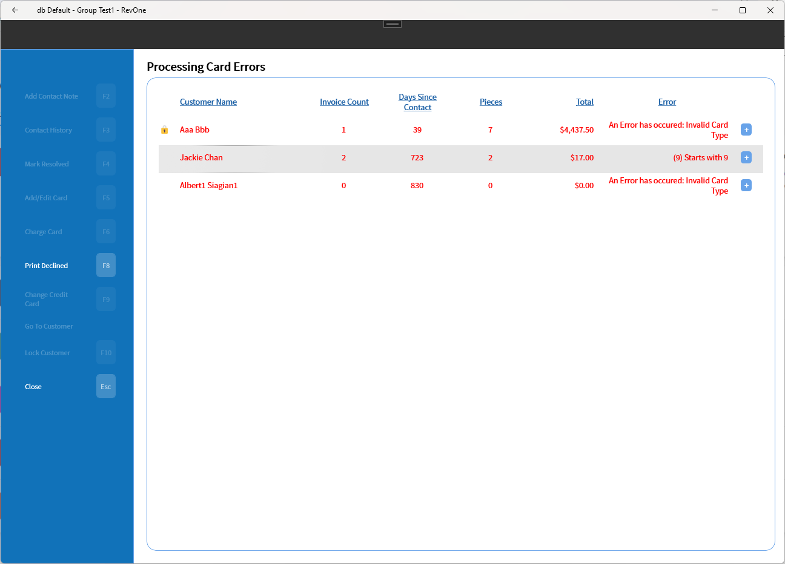
Clicking on the + button will show more details about the invoices involved as well as a more full error message if it is cut off in the main display
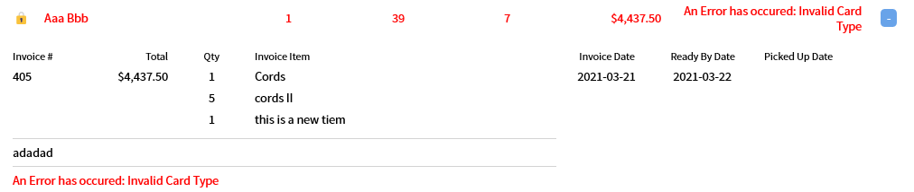
Contact Notes
Contact notes can be added to a customer when selected
The contact history is a full list of contact notes relating to the error
Mark Resolved
Mark resolved deactivates the error and removes it from this list
Add/Edit Card
If the customer returns with a new card it can be edited from this page
Charge Card
An attempt to charge the card for the related invoices is possible to test if the card is working
Print Declined
This generates a report of card errors and sends it to the print dialog
Go to Customer
This is a shortcut to the customer selected
Lock Customer
Locks the selected customer setting the lock time to the current time and the reason to the error text. See Lock Customer.
Process Charge Accounts — PCA
Charge a customer for all the invoices in a specific time range
The Frequency Type is a Manager Property in the customer setup used to separate customers into different groups. Here the separation is how frequently the statement needs to be generated
The setting is in Manager Properties at the bottom of the following screenshot
The full list of options is available to be set in the Setup>Charge Account Frequencies tab
The + Button beside the month allows for a more specific date range to be selected
Once the Load Data button is pressed all the eligible invoices are loaded
Clicking on the + button beside the customer will open a detal list with the invoices that are to be paid
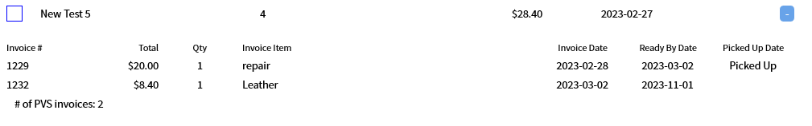
Process Payments
Iterates through the list of selected customers and pays their invoices using a single lump payment to their on file card
Change Credit Card
Changes the on file card
Send Expiry Emails
Searches through the list of customers for ones with an expired card and sends an email warning about the expiry to their selected contact
Print Unpaid
Loads a report of the customers and their invoices and sends it to the printer
Clear $0 Customers
Marks all invoices for customers currently owing $0 to be paid and picked up
Send Declined Messages
Sends a Declined Card Message to any selected customer who's card was declined while processing
Mark Resolved
Marks any error under the selected customers as inactive
Lock Customers with Errors
Locks any selected customer with an error using the current time as the lock time and the error text as the lock reason. See Lock Customer.
Put Overage on Account — POA
Sometimes there may be a data error resulting in an invoice being overpaid. The POA command will put the invoice overage on the customer's account and balance the invoice
Re-Scan Inventory — RSI
Used to get an accounting of the invoices/bags that are expected in the store versus what is actually in store
This is intended for use with a barcode reader so when the reader's scan is complete it should produce an enter key stroke and move to the second entry then add the item and how it was found
There are seven statuses that items can be found in
| Status | Meaning |
|---|---|
| Found | The item was found where it was expected |
| Added in Re-Scan | The item was not listed in a location so it was added to that location in the database |
| Was Listed in a different Location | The invoice was listed in a different location in the database so the database value was changed |
| Missing | The item was expected to be in store but was not scanned. It may have fallen off the rack or some other reason. This is added after the close button is pressed and the "Close and save" option is selected |
| Different Store | The invoice was listed with a prefix that doesn't match the current store |
| Picked Up | This invoice was marked as picked up but was found in store so the pickup status was removed and the location set to the scanned one |
| Written Off | This item had been previously been marked as written off by an employee. The written off status has been removed and the location changed to the scanned one |
Any error that occurs is accompanied by an error sound as well as a red error entry in the scan list
On pressing the Close button a set of options are presented
| Option | Action |
|---|---|
| Save for Later | Saves the current progress without completing it so that the re-scan can be picked up later |
| Complete and save | Completes the report searching the database for items that are missing and adding them before saving |
| Discard | Discards the current report and deletes any saved items in the report |
| Cancel | Cancels the close operation and returns to the main Re-Scan window |
Remove Batch Payments — RBP
Updated 2024-05-31 version 0.3.1044
Allows the viewing and removal of batch payments in a selected date range.
The date range needs to be selected first to avoid overloading the system by pulling every Batch Payment in the database.

The List of batch payments is shown and can be sorted or searched by name
Remove Payments
Selecting a batch payment will allow the payments associated with that batch to be removed. A reason needs to be selected for this to happen.
Select Invoice
This button will open a list of invoice numbers which can be used to jump to that invoice to inspect it for further information.

Remove Credit Card — RCC
Removes the current customers credit card.
Send Pickup Emails — SPE
Sends a Pickup email to customers with items that have invoices ready based on the days that they have been on the conveyer
If the template is setup with a CustomMessage parameter then custom text can be added to the email being sent
Notes can be added about the contact that has been made with the customer
Set Pick Up Location — PUL
❗Note: If there is a Metal Progetti system integrated with the database this function will not function after the invoice has been scanned to the Metal Progetti database
Allows the pickup location of an invoice to be changed from the one the invoice was created at
Once the location is changed the invoice number will change to show the pickup location as the prefix an the created location underneath
Terminal Commands — TS/TR/TV
❗ Deprecated it is preferred to use the actual card type command instead of these commands
Ended: Commands
Functions ↵
Functions
General functions not limited to Commands in the Command List
Active Promotions
In order to see the list of active promotions you can click the Active Promotions button on the top bar when expanded.
This opens a list of the promotions that are available and marked as promotion in the Setup>Coupons section.

Command Lookup
Pressing the command lookup button (Shift-F11) on the main screen will access a command lookup screen that allows a more clear method for looking up commands.

Coupon Codes
Updated 2024-05-30 version 1.0.48 (0.3.1040)
Coupon codes allow a group of discounts to be linked to a code that can be sent by email and redeemed in store. The setup is in the Managers section of Setup.
Once a code is setup it can be redeemed by entering the code into the coupon code text box in the promotions section:
If a bad code is entered it will display an error message.

If the customer has already used the code then a different message will be shown

Once the code is entered it will cycle through the list of discounts and allow the employee to select an item fore each one.

Credit Cards
A card on file can be registered with a customer in order to facilitate customer not present transactions.
Adding or editing a card
The add, change, and save commands are all copies of each other included to maintain consistency with CleanSuite.
Removing a card
In order to remove a card simply use the RCC command.
Customer Editing
A customer's profile is managed here.
Address Autocomplete
When typing in an address it will attempt to autocomplete using the Google API in API Keys.
Clicking on one of the suggestions will fill out the rest of the field with the results.
Billing Address
A separate billing address can be save when the bill is to be sent to a different address than the garments are to be sent to.
Distance Matrix
❗ Not fully implemented
A distance matrix value can be calculated on an address getting the distance from the main depot set in the Route Origin Address in Setup>System. This to be used in the route calculation system.
Once the load button is pressed the API will attempt to validate the address. It can sometimes be wrong so it is a good idea to verify that the address found matches.

Email Validation
Send an validation Email to a customer to ensure that the email is set correctly.
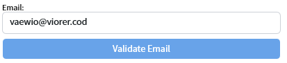
Manager Properties
Some properties need to have manager approval to change so the manager properties section is locked down with a requirement for an administrator password.
Once in the manager properties it is possible to cancel with the cancel button.
Database Setup
Editing the Databases requires SuperUser authorization.
Once in the setup the information about the database will be shown and the specific database can be selected
There are some advanced settings that may not be required for setup.
Add/Edit Employee
It is possible to add or edit employees on the specific database from here. This is basically the same window as the Setup>Employee File in the main setup window.
Edit
In the edit mode more options become available.

❗ Be careful about exported database settings. The password is in clear text and could cause security issues if not deleted once it is finished being used.
| Option | Meaning |
|---|---|
| Check | Runs database checks to ensure that the database is setup correctly |
| Add new Database | Adds a new database |
| Export Database Settings | Exports database settings to a CSV file |
| Import Database Setting | Imports database settings from a CSV file |
Check Steps
Checking the database makes sure that the database is setup correctly, there are several steps that are by default not checked. These tend to attempt to fix bad existing data and often take a long time to run so they default to inactive.
Change Database
Once there is more than one database saved the option to select what database to use becomes available.
Distance Matrix
❗ Incomplete function. The route calculation part of the distance matrix is not yet functional
Customer Edit
The Distance Matrix is used to calculate the shortest route for different customer's. In the Customer Edit section is a Distance Matrix section.
Opening the section with the + button shows the Load Matrix button.
Once the load button is pressed the API will attempt to validate the address. It can sometimes be wrong so it is a good idea to verify that the address found matches.
Database Check Step
There is another part in the Database Setup Check Steps where it is possible to enable the "Fetch next 200 Distance Matrices" step. It is limited to 200 to prevent overwhelming the service.
Garment Issues
If an employee notices an issue with a customer's garment they can note it down sending a message to the customer allowing it be verified that it was pre-existing.
Viewing Issues
In the customer summary on the main window there are two locations where the garment issues are shown. The first is between Quick Tickets and Customer Updates (if they are shown) under the command line, this shows all the garment issues in the system. The second is a red line that shows the current customer's garment issues under the promotions display. Clicking either of these will bring up a list of those garment issues.
In this list garment issues can be marked resolved (e.g. if they are fixed), jump to the affected invoice, or if the item is double clicked the issue can be viewed, edited.
Adding Garment Issues
Double clicking on an item in the main screen will bring up the Set Item Details popup which contains a button to Add Garment Issue.
The Change Invoice screen also has this button.
Once in the Garment Issue popup you can fill out the information or use Load File to load an image off of the local computer.
? Cloud synced directories like OneDrives do not play nice with this file load function so such files may need to be moved to a non synced directory
Once the issue is filled out you can save the issue
Garment Measurement
A garment's measurements can be recorded to keep track of any shrinkage. In the add/change item window this is done with the Measurements button (F4).
Once inside the measurements can be recorded. The units are not tracked so this must be decided as company policy.
Double clicking on the item in the main invoice display will open the Set Item Details popup which also contains measurements.
Lock Customer
If a customer hasn't been paying their bills it can be useful to lock them out from creating any new invoices until the lock is cleared
Locking the customer
Locking the customer can be done in either:
- Process Charge Accounts
- Process Card Errors
- Manager Properties in the customer edit screen
In the manager properties you can select a preset reason to set a lock or the - to remove an existing lock.
Displaying the reason
When a customer is locked a 🔒 will be displayed on the customer.
Beside the name in the customer summary.
Beside the id in the edit screen.
Beside the customer in the PCE screen.

Clicking on this symbol will display a popup with reason for the lock and the time that the lock was created.
The "(9) Starts with 9" error is an internal testing error

Effect
The only thing prevented when locked is creating a new invoice.

Heat Seal Tags
Heat seal tags are tags that are intended to be retained on the garment across multiple cleaning sessions. This allows information about the specific garment to be tracked
Adding tags while adding items to invoices
A heat seal tag can be added right from the add/change invoice page by typing into the heat seal tag text box and hitting enter or scanning a barcode while in the text box
This opens the Add Heat Seal Tag — AHT dialog
Pre-adding tags
The Add Heat Seal Tag — AHT command is used to prepare heat seal tags outside of the add invoice window
Editing tags
Change Heat Seal Tag — CHT is used for editing existing tags
Messaging
Messages are periodically sent to customers on various triggers using the AWS Pinpoint API setup in API Keys.
| Message | Trigger | Description |
|---|---|---|
| New Customer | New customer created | A welcome message to indicate that the customer was successfully setup in the database and that the contact succeeded |
| Order Ready | Counter customer's order has all sub invoices set to a location | Alerts the customer that an order is ready to pick up |
| Order Delivery | Route customer has items scanned in Multiple Pickup — MU | Alerts the customer that items are on the way |
| Card Declined | Card on file transaction is declined | Alerts customer of error in a transaction |
| Card Expiry | Send Expiry Emails button in Process Charge Accounts — PCA | Alerts the customer that their card is either expired or about to expire |
| Delivery Issue | ❗ Removing pickup date? not sure why | Indicates that there was an issue with the delivery |
| Garment Issue | On saving a garment issue | Alerts the customer that an issue with the garment has been found and logged. |
Metal Progetti
Integration is possible with the Metal Progetti dry cleaner automation systems.
In order to use Metal Progetti you need to activate it in the Setup>Invoices page.
View Tag/Invoice Status
In order to get some insight about how an invoices items are doing on the Metal Progetti system the View Tag/Invoice Status commands can be used.

Heat Seal Tags may need to be invalidated if the Multiple Pickup — MU or the ordinary pickup methods some miss invalidating.
It may be useful to look at the tag history for the log records coming from Metal Progetti.

One of the tasks may be to look for the timestamp of the Bagging Confirmation.

More ↵
More
Payment
The payment functions can be accessed from here.

Find
The find tab contains multiple methods for finding customers or invoices. All of the search terms with a '=' sign in the name can also be searched for in the main screen's command line by using that prefix (e.g. Tag search with T=F12345).

Add

Change
Remove
Reports
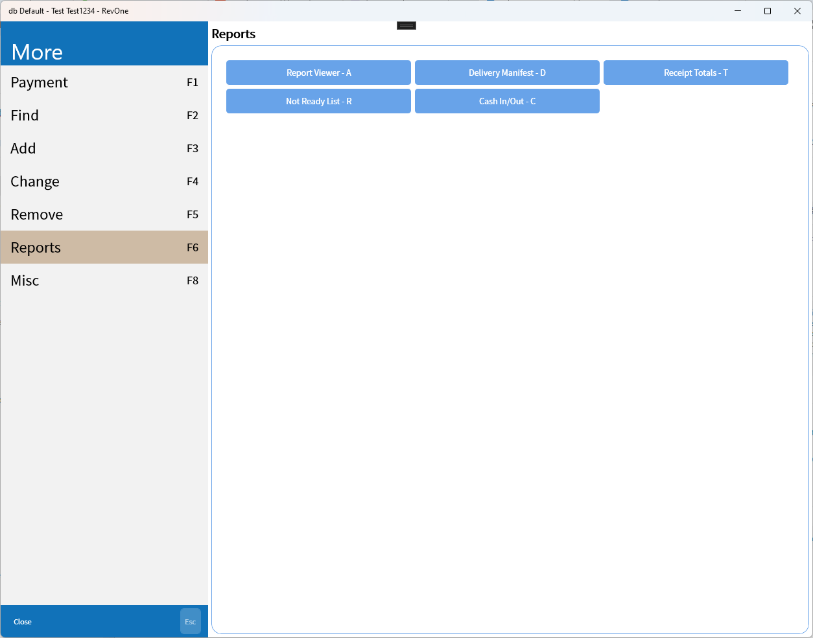
Misc
Find
The find tab contains multiple methods for finding customers or invoices. All of the search terms with a '=' sign in the name can also be searched for in the main screen's command line by using that prefix (e.g. Tag search with T=F12345).
Customer searches will open the "Select Customer" popup if there is more than one found.

Invoice searches are filtered by invoice date and status.

This opens the "Select Invoice" popup
Reports
Allows the loading of reports from inside revPOS.
Due to the report server being external it can take a bit longer to load the report Viewer

Report Viewer
The report viewer can be used to display all of the reports on the server.

The report can be selected from the dropdowns on top of the page.

Once the report is loaded the parameters will open on the right of the page.

Single Reports
A single report can be opened directly, this uses an in-application parameter dialog.
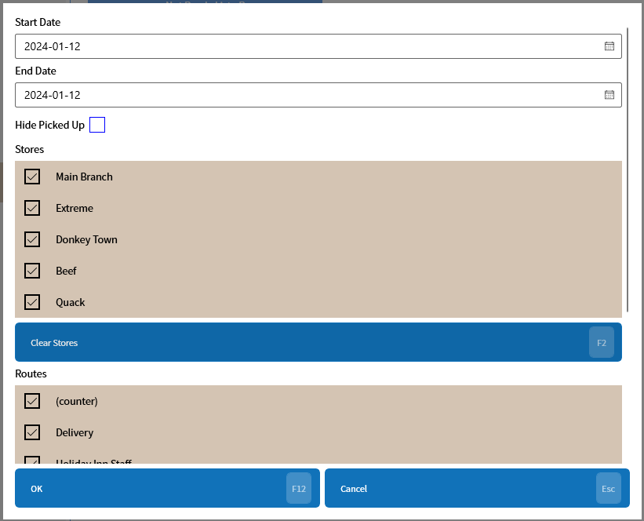
Many parameter dialogs will require scrolling to see all of the options.

After selecting the parameters the single report will be displayed.
Ended: More
Ended: Functions
Setup ↵
Setup
Functions in the setup menu
- All Employees
- Manager
- Brands
- Cash Drawer
- Change Routes
- Charge Account Frequencies
- Company
- Coupons
- Coupon Codes
- Credit Card
- Customer Codes
- Email/Messaging
- Invoice Locks
- Invoices
- Price List Comparator
- Price Lists
- Ready By Defaults
- Receipt Coupon
- Statement Groups Lists
- Statement Groups
- Store Locations
- System
- Tags
- Taxes
- Text Prompts
- Time Card
- SuperUser
All Employees ↵
All Employees
Functions available to all employees
Employee File
Allows Employee Files to be edited; setting the employee info, access level, setting the employee as the Default Account Manager, or terminating employees.

Front Counter
The Front Counter level employees only have access to their own account in this field allowing them to modify their password as well as their own data. They do not have access to Access Level, Default Account Manager, or Termination status
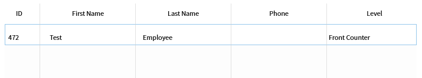
SuperUser
Only the SuperUser can see the Super user in the list:

In the Manager level access the SuperUser record is not shown:
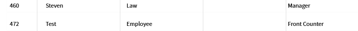
Garment Colours
Setup for the list of available garment colours that are available
Receipt
Gives front counter employees the ability to set the number of copies of receipts to print for invoices and quick tickets without access to the rest of the settings for invoices

| Setting | Explanation | Scope |
|---|---|---|
| Number of Copies | The number of copies of the receipt to print per invoice | Machine Specific |
| Quick Ticket Copies | The number of copies of the receipt to print per quick ticket | Machine Specific |
Update
Shows the current version and a button to attempt to update if there is a new version in the store
Ended: All Employees
Manager ↵
Manager
Functions only available to managers
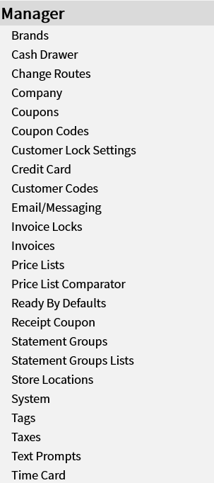
- Brands
- Cash Drawer
- Change Routes
- Charge Account Frequencies
- Company
- Coupons
- Coupon Codes
- Credit Card
- Customer Codes
- Email/Messaging
- Invoice Locks
- Invoices
- Price List Comparator
- Price Lists
- Ready By Defaults
- Receipt Coupon
- Statement Groups Lists
- Statement Groups
- Store Locations
- System
- Tags
- Taxes
- Text Prompts
- Time Card
Brands
Controls the list of brands available to Heat Seal Tags, allowing them to be added, edited or deleted.
Cash Drawer
Machine Specific
Settings for the cash drawer. The Select function attempts to find a network drawer. For wired (USB) drawers use the Proxy
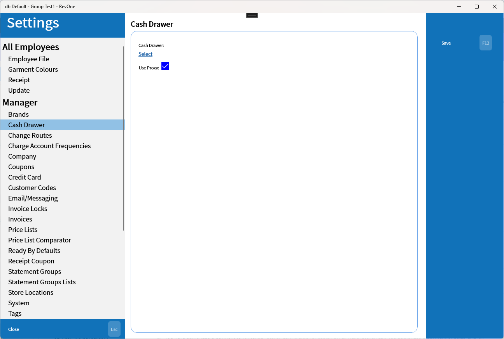
Change Routes
Allows the editing of routes.
When adding or editing a route the name and drive fields appear below.
Change Days
The Change Days function allow the available days as well as an indication of how many people are set to each category on each day
Here the Route "Wednesday" is shows that there is one person set on Monday for Pick Up and one for Both which appears to be an error remaining the available days.
Clicking on one of the buttons in the table at top will display a list of the customers in that group and allow them to be copied to the clipboard.

The top row will show all customers in all groups indicating the type by the letter prefix:
| Prefix | Meaning |
|---|---|
| D | Delivery |
| P | Pick Up |
| B | Both Delivery and Pick Up |
By selecting an original day and no new day the Delete button allows the customers on that day to be removed from the route.
By selecting both an original and new day the Move button allows the customers on the original day to be moved to the new day.
Change Order
Allows the order of the customers in a route to be customized.
Charge Account Frequencies
System Wide
Sets up the list of charge account frequencies used in both Monthly Charge Accounts (MCA) and Process Charge Accounts (PCA)

When adding a frequency a field will appear below.

A customer's charge account frequency is set in the manager properties of their customer details page.
Company
Database Wide
Sets details about the company. This is intended to hold information about the head offices. Individual location addresses should be entered into Store Locations.
The timezone setting is required as a default value for integration with the AWS API. The Customer Service Email is used to send emails from the customer sign up website.
Coupons
Updated 2024-05-31 version 1.0.48 (0.3.1041)
Sets coupons (or discounts) for use on invoices.
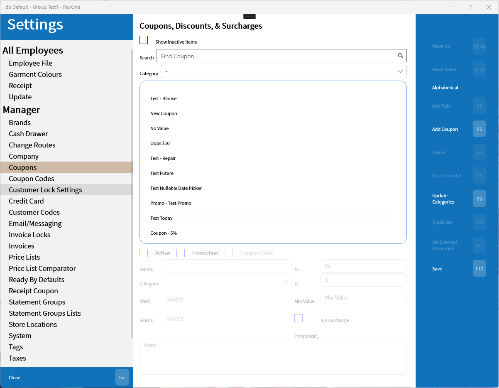
Show Inactive
Coupon's have an "Active" flag which can be turned off hiding them from normal use. The Show Inactive checkbox wil show these inactive coupons as grey in the list

Add/Edit
When adding or editing a coupon the coupons details will be enabled. The "is a surcharge" checkbox allows a coupon to be set as a surcharge increasing the price of the item/invoice instead of reducing it.

Promotion
There is a checkbox marked promotion next to the Active checkbox that controls whether or not the function appears in the Active Promotions window.
Add Rules
Rules can be added to a coupon limiting where they can be used and adding the ability to automatically apply them when they are eligible.

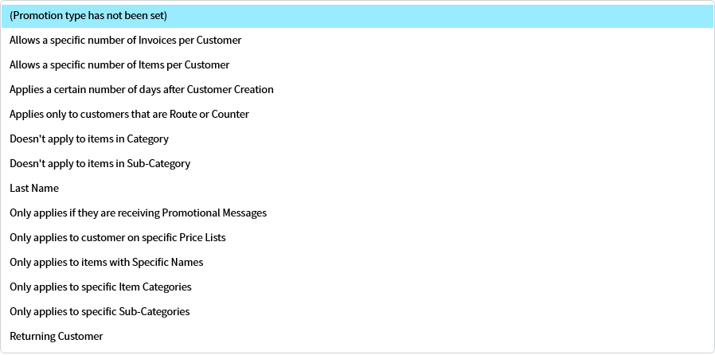
Rule Types
Allows a specific number if Invoice/Items per Customer
This adds a counter that will disable the coupon once it has counted down to zero.

Applies a certain number of days after Customer Creation (Welcome)
The Welcome promotion type will apply a certain number of days after their record was created for a limited period.
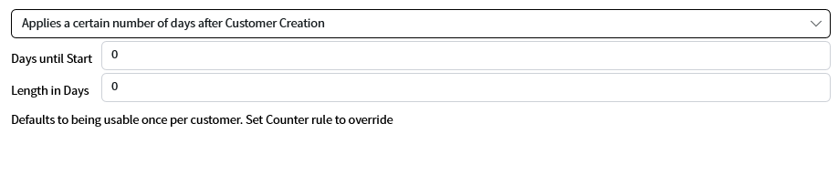
Applies only to customers that are Route or Counter
If the customer is on a route they are set as route other wise they are a counter customer


Doesn't apply to items in Category/Sub-Category
This rule allows a number of categories/sub-categories to be excluded from a promotion

Last Name (starts with)
Customers who's last name starts in the range of letters will be eligible for this coupon.

Only applies if they are receiving Promotional Messages
If the customer has permission to receive email or SMS promotional messages they will be eligible for this promotion.

Only applies to customer/item
Types: customer on Price List, items with Specific Names, specific Item Categories, or specific Sub-Categories
Limits a coupon to a specific list of items that the coupon will be available for.

Returning Customers
If a customer has been inactive for a certain number of days they will be eligible for this coupon in order to try to get them to return.

Rules List
Adding rules will populate them in the list below
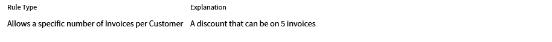
Once the rules are saved with OK they will be displayed on the coupon details screen on the bottom.

Reset Counter
For coupons with a specific number of uses this will set a new start date and reset all counters.

Update Categories
Coupon Categories are used to better organize the coupons and the Update Categories button allows for the management of these categories.
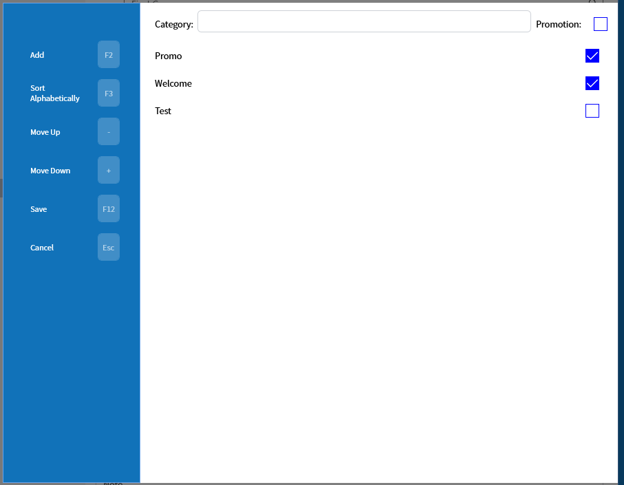
The checkbox on each item is the default promotion setting that sets the default visibility in the Active Promotions window. The check box on the discount itself overrides this setting.
Duplicate
This will simply create a new coupon based on the currently selected one.
Set External Promotion
Links a coupon to a AWS promotion pulled from the AWS settings in the API Keys section.

Coupon Codes
Updated 2024-05-31 version 1.0.48 (0.3.1041)
Coupon codes allow a group of discounts to be linked to a code that can be sent by email and redeemed in store. Information about redeeming the codes can be found Here.

A coupon code can be added with the "New Coupon Code" button or edited by selecting a code and pressing the "Edit" button.

Once adding or editing the information can be entered and discounts can be added with the "Add Discount" button.

Credit Card
Settings pertaining to credit cards.
| Setting | Explanation | Scope |
|---|---|---|
| Days before expiry to notify | The number of days before a cards expiry date before the Send Expiry Emails button in Process Charge Accounts — PCA will send a card expiry message |
Database Wide |
| Repeat Frequency | The frequency that an expiry message will be allowed to be sent in | Database Wide |
| Cash Discount (%) | The Cash Discount used to account for credit card processing fees | Database Wide |
| Payment Types | Lists the payment types and whether or not they are exempt from the Cash Discount, only editable by the SuperUser | Database Wide |
Customer Codes
Codes that can be used to classify customers with.

Email/Messaging
Database Wide except for when Use Local is active the Email Server is Machine Specific
Settings for email and SMS messaging.
The Use Local setting is for testing purposes. The Other messaging settings are duplicates of the ones in the Credit Card setting. The message template settings allow specific message types to be disabled.
You can test the settings by sending a test email.
A success should show a message like below and failure should display the specific error message.
Email templates can also be set here.
Templates are setup with the name of the subject of the email in an html comment at the top (the <!--Statement Ready--> below would set the subject as "Statement Ready") and the body follows in HTML format with parameters set in curly braces like {AddressHeader}.
Invoice Locks
Allows a manager to check if an invoice is locked and unlock it if necessary.
Invoices
Settings relating to invoices.
| Setting | Explanation | Scope |
|---|---|---|
| Number of copies | The number of copies of invoice receipts to print, duplicated in Receipt | Machine Specific |
| Quick Ticket Copies | The number of copies of quick ticket receipts to print, duplicated in Receipt | Machine Specific |
| Prefix | The store prefix that the current system is associated with | Machine Specific |
| Coupon Threshold | The threshold above which coupons will require manager permission. Doesn't apply to invoice coupons set in the customer settings. | Database Wide |
| Address and phone number | Print the address and phone number in the receipt. | Database Wide |
| Print last name first | Prints the customer's last name first on receipts. | Database Wide |
| Number on the bottom | Prints the invoice number on the bottom of the receipt. | Database Wide |
| Number on the right | Prints the invoice number on the right side of the receipt. | Database Wide |
| Ready by on the top | Prints the ready by status on the top of the receipt. | Database Wide |
| Bold shirt preference | Prints the shirt preference bold on receipts. | Database Wide |
| Invoice number speed search | Search invoices by partial invoice numbers | Database Wide |
| Round cash to the nearest 5¢ | Adds a rounding item to invoice paid using cash to round the transaction to the nearest 5¢ | Database Wide |
| Allow payment by coupon | Allows payment by coupon. | Database Wide |
| Use Metal Progetti | Enable/Disable/Override the Use Metal Progetti setting. Dialog | Machine Specific if deactivating but if overriding Database Wide |
| MP Tag Prefix | The prefix used for Metal Progetti tags allowing multiple databases to connect to the same physical Metal Progetti machine | Database Wide |
| Default location for MU | The default location to set items when scanning them in the Multiple Pickup — MU command. | Database Wide |
| Tag on invoice | Enables setting tags on entire invoices vs on specific items. | Database Wide |
| Tags before "Ready By" | Sets invoice tag before opening the set ready by dialog | Database Wide |
| Allow Multiple Tags | Allows multiple tags. ❗ May be deprecated? | Database Wide |
| Print barcodes on invoices | Prints invoice barcodes on the receipts. | Database Wide |
| Invoice Message | Sets a message to print in invoice receipts. Dialog | Database Wide |
| Print message in invoice | Prints the message set in the previous setting in the invoice receipt. | Database Wide |
| Change hours | ❗ Not used? | Machine Specific |
| Maximum pieces | ❗ Not used? | Machine Specific |
| Invoice Printer | Connects with a network printer. ❗ Largely untested use POS Proxy instead. | Machine Specific |
| Use POS Printer | Use the POS Printer utility. Bundled in the store version and should launch if it is not open on attempting to print. | Machine Specific |
| Launch POS Printer | Attempt to launch the POS Printer. | Machine Specific |
Use Metal Progetti
In order to disable the Metal Progetti system on a permanent bases requires SuperUser permission. Overriding the setting will temporarily disable the setting for the local system.

Invoice Message
The dialog used to set the message being printed on the invoice receipt.
Price Lists
Setup the price lists where the customer's item prices are set in.
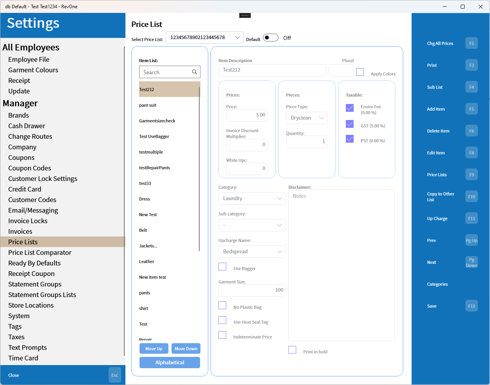
Item Fields
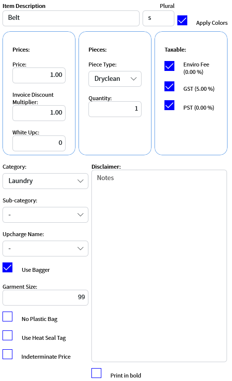
| Field | Use |
|---|---|
| Description | The name of the item |
| Plural | Added to the end of the Description when there are multiples |
| Apply Colors | Use the colours list in Garment Colours when adding items of this type |
| Price | The price of the item |
| Invoice Discount Multiplier | The amount of the customer's invoice discount to use, usually 1 or 0 for exempt but can be a decimal amount (e.g. 0.5 for when only half the invoice discount applies) |
| White Upc | ❗ Unknown? |
| Piece Type | The type of piece |
| Quantity | How many pieces in this price item |
| Taxable | Indicates if the item is exempt from this type of tax |
| Category/Sub-category | The (sub)-category to place this item under |
| Upcharge | The upcharge list to use |
| Use Bagger | The item uses the Metal Progetti bagger |
| Garment Size | A relative size used by Metal Progetti to split invoices to sub invoice and maintain sufficient space on the conveyer |
| No Plastic Bag | The item doesn't use a plastic bag |
| Use Heat Seal Tag | The item requires a heat seal tag |
| Disclaimer | Notes about the item |
| Print in bold | Print the item in bold ❗ May not be in use |
Default Price List
Sets the default price list that a new customer will be automatically set as.
Change All Prices
Changes all price by a percentage. Can limit the change to specific categories.
Generates a price list report and sends it to the local print dialog.
Sub List
Set up a sub-list.
Price Lists
Add or edit price lists.
A new price list can be created as a copy of an existing list or blank.
After choosing to create a blank or copy the name and description of the price list must be set.
Copy to Other List
Copies the contents of one price list to another.
Upcharge
Set upcharges for the current item
If an item doesn't have an upcharge name then the option to create a new upcharge list or select an existing one is opened.
Categories
Set the available categories and sub-categories.
Price List Comparator
Compares items between different price lists to attempt to maintain consistency.
Enter a search term into the search bar and it hit the Search button or F2 and the list of price items will be loaded.
Select items you want to compare and hit the Compare button to display the comparison.
Clicking the "?" button near a field with multiple values will show a popup with the values that exist.

A checkbox with multiple values looks like this:
Ready By Defaults
Sets the default Ready By date depending on day of week with option for earlier service if dropped off by a specific time of day.

The ready by dates are defiled by Regular Service and Early Drop Off Service.
Early Drop Off Service allows a different ready by date if items are dropped off earlier.
Receipt Coupon
Database Wide
Defines a coupon that can be printed on receipts.
Statement Groups
Lists statement groups and allows for adding, deleting, and changing the group head. The Head Found column indicates whether or not the statement head can be found if the checkbox is empty it means that the original statement head is no longer valid and a new head should be chosen.
The Change Head button will open the following popup where a new head can be chosen from the existing customers in the group.
Other ways to replace the statement head include using the Statement Group Lists setup or the Replace Statement Head button in the customer's Manager Properties.
Statement Group Lists
Lists customers in a statement group and allow them to be added, removed, set as head, or outputted to CSV files.
The add button will open a select customer dialog that will allow an existing customer to searched for and added.
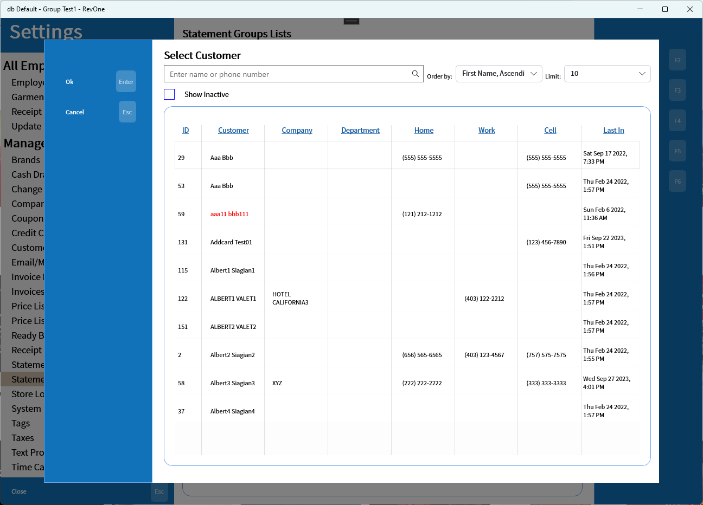
Store Locations
Allows store locations to be linked to prefixes and the addresses and other info stored for use in reports and messages.
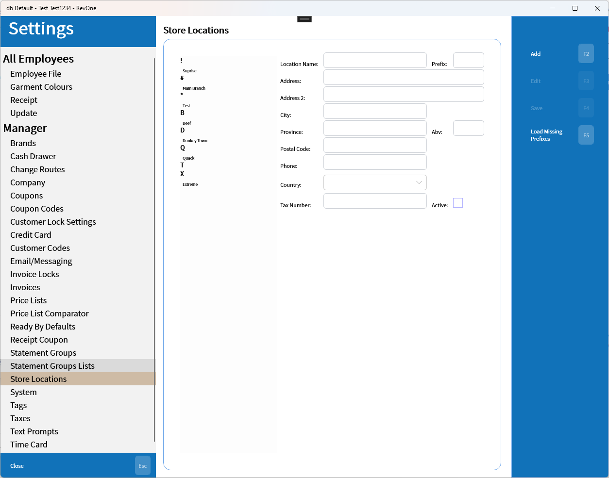
System
Updated 2024-04-25 version 1.0.44.0 (0.3.1013)
Sets system settings.

| Setting | Explanation | Scope |
|---|---|---|
| This computer's name | A nickname for the computer that is used in reports | Machine Specific |
| Password timeout | The time between requests for password entry on less secure functions | Database Wide |
| Route Origin Address | The originating location for route calculation | Database Wide |
| Number of Vehicles | The number of vehicles used to deliver routes for route calculation | Database Wide |
| Enable Cash In prompt | Enables the prompt that attempts to remind employees to cash in | Database Wide |
| Cash In prompt retry | The time to wait when clicking the Wait button on the Cash In prompt | Database Wide |
| Expected Cash Float | The expected float when cashing in. If the cash in float doesn't match it will display a confirmation prompt comparing the current float with the expected value | Database Wide |
| Open on Startup | Opens the startup setting window in Windows to allow the application to be set to open on startup | Machine Specific |
| Try to Update | Attempt to update from the Microsoft Store if an update exists | Machine Specific |
| Test Audio | Makes a sound to ensure that the confirmation sound is audible on this machine | Machine Specific |
| Show invoice location popup | Shows the List Locations popup instead of printing the results to the receipt printer | Machine Specific |
| Save Diagnostic Logs | Saves more detailed logs to the database | Machine Specific |
| Scanner Delay (ms) | A delay between typing ending and the enter button being recognized to allow for the speed at which keyboard barcode scanners operate | Machine Specific |
| Is Front Computer | Indicates that the computer is a front facing system and enables requesting the employee for information from the customer that is missing | Machine Specific |
| Show HotKey Hints | Shows the hot key hints beside buttons | Machine Specific |
Cash In prompt:
A prompt to try to force front staff to run the Cash In command in the morning.

Tags
❗ The only setting here is identical to Invoices/Tag on invoice.
Database Wide
Contains a setting to allow Tags on invoice.
Taxes
Settings for taxes.
| Setting | Explanation | Scope |
|---|---|---|
| Tax 1/2/3 | The three tax options | Database Wide |
| Apply Tax 2 to Tax 1 Apply Tax 3 to Tax 1 Apply Tax 3 to Tax 2 |
Indicates whether to calculate the tax value on top of previous tax value or on the invoice sub total | Database Wide |
| Apply Tax # to all items | Determines if a new Item (F5) created in invoice will default to having the tax enabled | Database Wide |
Text Prompts
Database Wide
Allows for specific text prompts to be customized.
The ? button next to some of the prompts include a list of available placeholders for the specific prompt.
Time Card
Machine Specific
Contains Time Card settings

Ended: Manager
SuperUser ↵
SuperUser
Functions only available to the SuperUser. Contains things that often require secrets like account passwords
API Keys
Updated 2024-05-13 version 1.0.48 (0.3.1036)
Set keys for external APIs.

Edit AWS Pinpoint email templates.
Allows editing the AWS templates from inside the POS system

Marketing API
Load Bulk Profiles
When customer profiles have been uploaded in bulk through CSV the profile IDs need to be pulled and associated back with the customers. This button will pull the current list of profiles from the marketing API and associate them with customers with matching Customer IDs. It will then display the number of profiles that were pulled and the number that were loaded.
The loaded amount is generally going to be lower than the number of customers due to split profiles and the admin account having it's own profile that doesn't match with any customer.
Update message settings profiles
This pulls a list of profiles from the marketing API and updates the promotional email/SMS flags based on if the marketing system has them as subscribed to the respective service. It also synchronizes the profile IDs with the customer IDs if they aren't already.

Minor command — Update Sub
The minor command Update Sub or Update Subscription will pull all subscribe/unsubscribe events that occurred since the last update either using this command or the all profiles button above and update the promotional email/SMS flags. This is to reduce the API calls and only update changes.
Error Notification
Database Wide
Settings for error notifications being sent to administrators. The log expiry is used to auto-delete old error messages to prevent the log from getting overloaded. If no email or SMS message is to be set then empty the list by selecting the items in the list and clicking delete.
External Links
Database Wide
Links to external pages used by the application.
| Link | Use |
|---|---|
| Reporting Web Address | The reporting website, used to generate PDF reports for several functions |
| Help Gateway | The location of the Help files |
Recurring Messages
Database Wide
Sets times when recurring messages are allowed to be repeated.
SMS Processor
❗ Deprecated SMS messages are now being sent through AWS Pinpoint using Email|Messaging.
Sets a processor for sending SMS messages.
Terminal
Updated 2024-05-21 version 1.0.48 (0.3.1031)
Machine Specific
Setup for the local payment terminal. The MID and TID are not required but will allow reports to indicate the specific terminal used to make transaction. without this set this information will be lost.
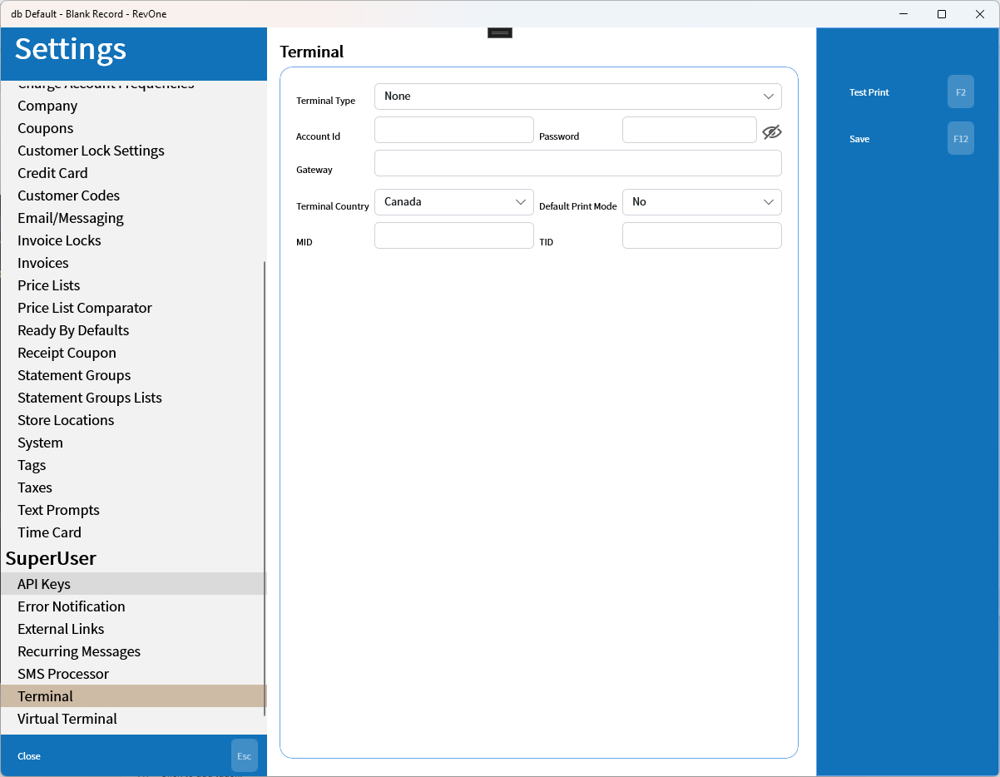
Virtual Terminal
Updated 2024-05-21 1.0.48 (version 0.3.1031)
Machine Specific
Setup for the virtual terminal used to make card on file transactions. The External Site Processor indicates the type of processor that the customer sign up page will use.